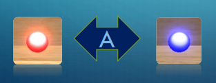
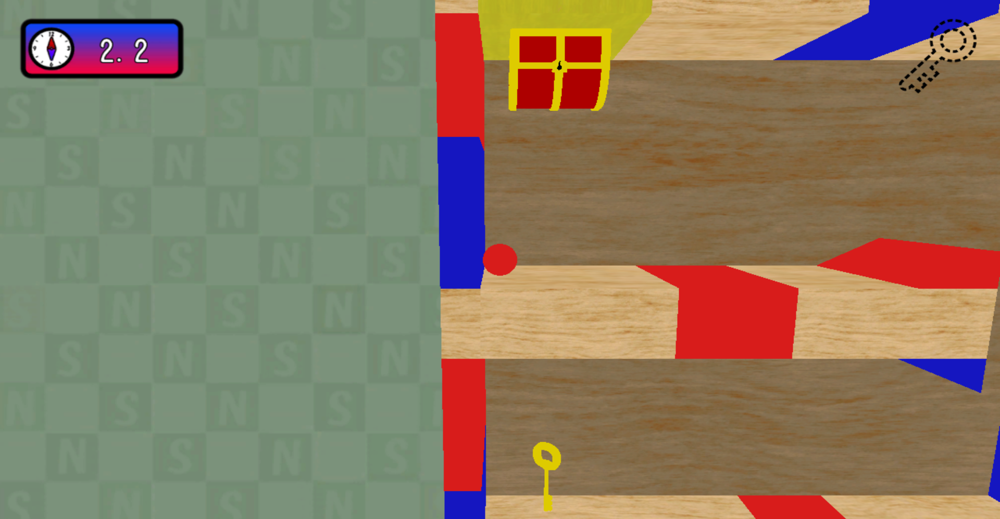
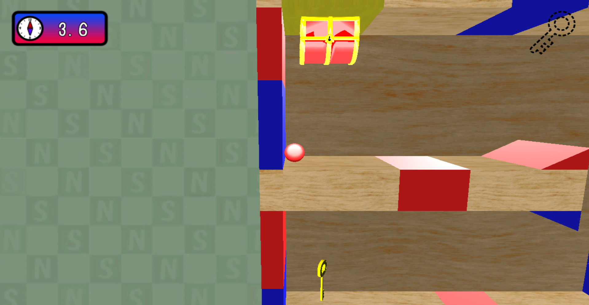
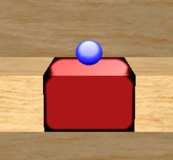
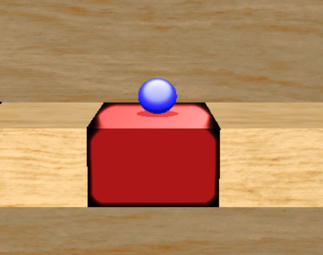

BackGround.h
BackGround.cpp
ConstTriggerBoxValue.h
ConstValue.h
DeathBlock.h
DeathBlock.cpp
DirectionLight.h
DirectionLight.cpp
FontRender.h
FontRender.cpp
HUD.h
HUD.cpp
Key.h
Key.cpp
LightBase.h
LightBase.cpp
LightCamera.h
LightManager.h
LightManager.cpp
Magnet.h
Magnet.cpp
main.h
MainCamera.h
MainCamera.cpp
Player.h
Player.cpp
RuleSceneConstData.h
SaveData.h
SaveData.cpp
Seesaw.h
Seesaw.cpp
SkinModelRender.h
SkinModelRender.cpp
SoundManager.h
SoundManager.cpp
SpriteRender.h
SpriteRender.cpp
TreasureBox.h
TreasureBox.cpp
deferredLighting.fx
gaussianBlur.fx
model.fx
postEffect.fx
sprite.fx
drawShadowMap.fx
shadowReciever.fx
Zprepass.fx
また、上記含め、全てのコードのリファクタリングを担当。
RenderTarget.h(G-Buffer用のレンダーターゲットの作成及び取得を行う関数、データメンバを追加)
RenderTarget.cpp(静的メンバの初期化を行うコードを追加)
tkSoundSource.cpp(ファイルパスが通らなかった時に警告を出すコードを追加)
Vector.h(BulletPhysicsに対応する関数、インクルードを追加)
本作品ではディズニーベースのPBRを実装しており、フレネル反射を考慮した拡散反射、クックトランスモデル利用したスペキュラ反射を用いています。ランバート拡散反射では、入射してきた光よりも強い光を返すため、物理的に正しくはありませんでした。その値はπ倍であることが知られています。そのため、本作品ではその値をπで割った正規化ランバート拡散反射を採用しています。鏡面反射では、物体の金属度、なめらかさのパラメータを元に鏡面反射率を求めています。フォン鏡面反射ではこのパラメータが無かったため、視点からサーフェイスに伸びるベクトルと反射ベクトルしか鏡面反射に使うネタがありませんでした（絞り率は定数とする）。今回は各物体ごとにパラメータを設定し、不自然な金属感を出さないようにしています。これにより、エネルギー保存則に従ったライティング処理を実装しました。

▲テクスチャカラーによるゲーム画面

▲PBR実装後のゲーム画面
1.シャドウマップ用のレンダーターゲットを作成する
2.ライトの位置にカメラを設置する
3.シャドウマップ描画用のモデルを用意する
4.シャドウマップ用のピクセルシェーダーを用意する
5.シャドウマップに用意した影用モデルを描画する
今回はデプスシャドウなので、シェーダー側では、ライトからみた深度値を書き込みます。
▼深度値が書き込まれたシャドウマップ
▼シャドウなし

▼デプスシャドウあり



プレイヤーは、磁石から受ける磁力で自機を進めていきます。そのため、ゴールするためには磁力の強さや自機の質量、摩擦などを調整する必要がありました。しかしそれ以上に問題だったのが磁力の影響範囲です。かつては自機と磁石の距離で磁力計算をしていました。そのため、ステージ全体に磁石が設置されていることもあり、想定していない磁石からも磁力を受けてしまい、まともに進めないということが起きてしまいました。そこで、磁力の影響範囲を、距離ではなくトリガーボックスを用いて行うことにしました。

▲赤線が影響範囲を示している
各磁石ごとに影響範囲を決めることで、ステージギミックも作りやすくなり、不自然な動きも抑えることができました。
このゲームは、各モデルごとに固有のライトを割り当てています。そのため、ステージが回転したときに全てのライトを半回転させる必要がありました。そこで、事前に半回転用のイベントを作成しておき、カメラが半回転すると同時にそのイベント（関数）を呼ぶことで、無駄の少ない処理にすることができました。